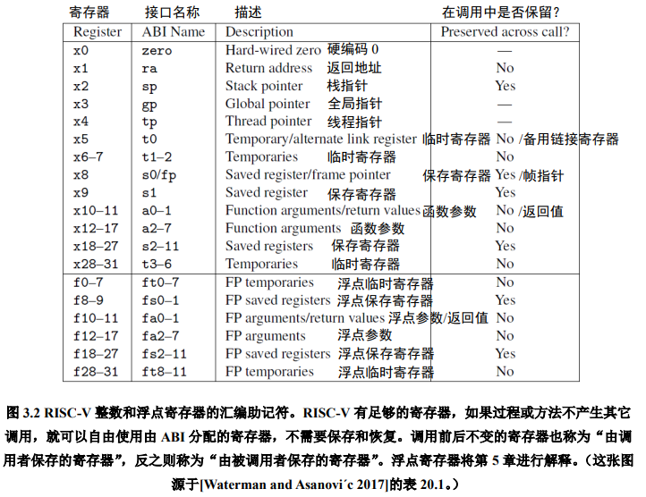
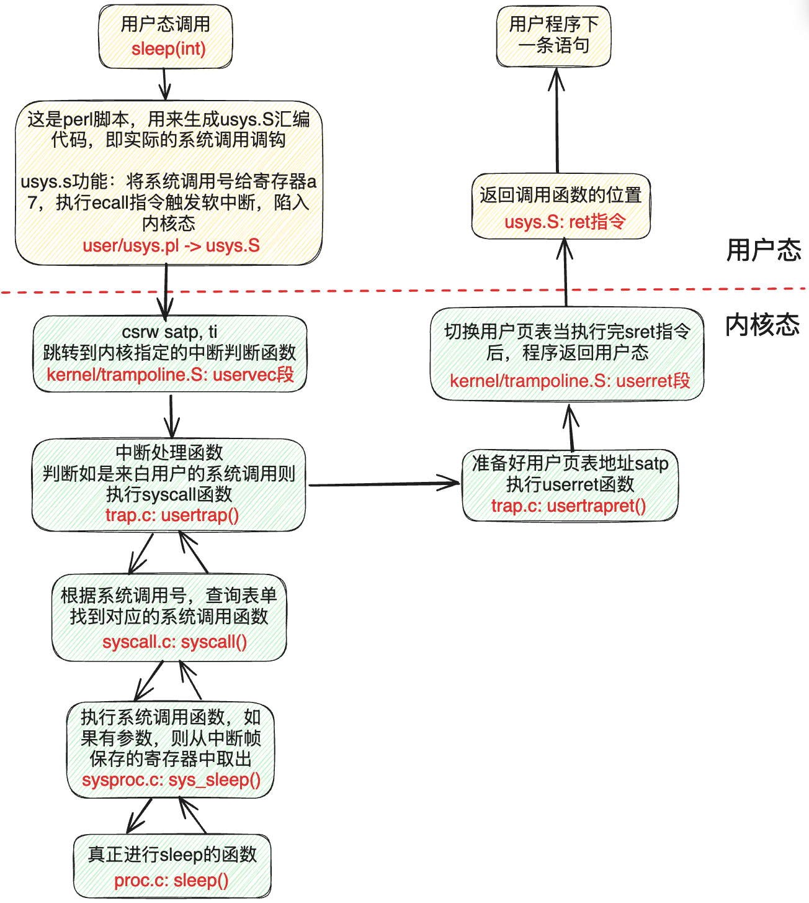
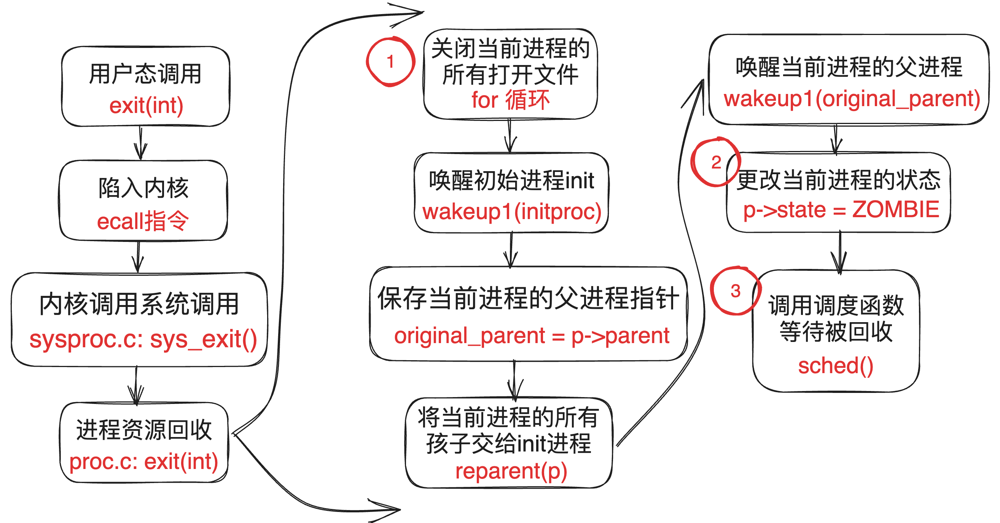
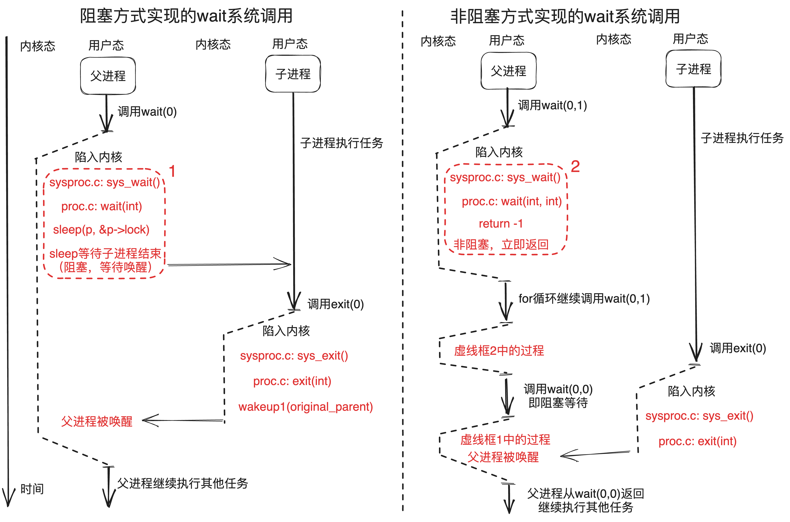
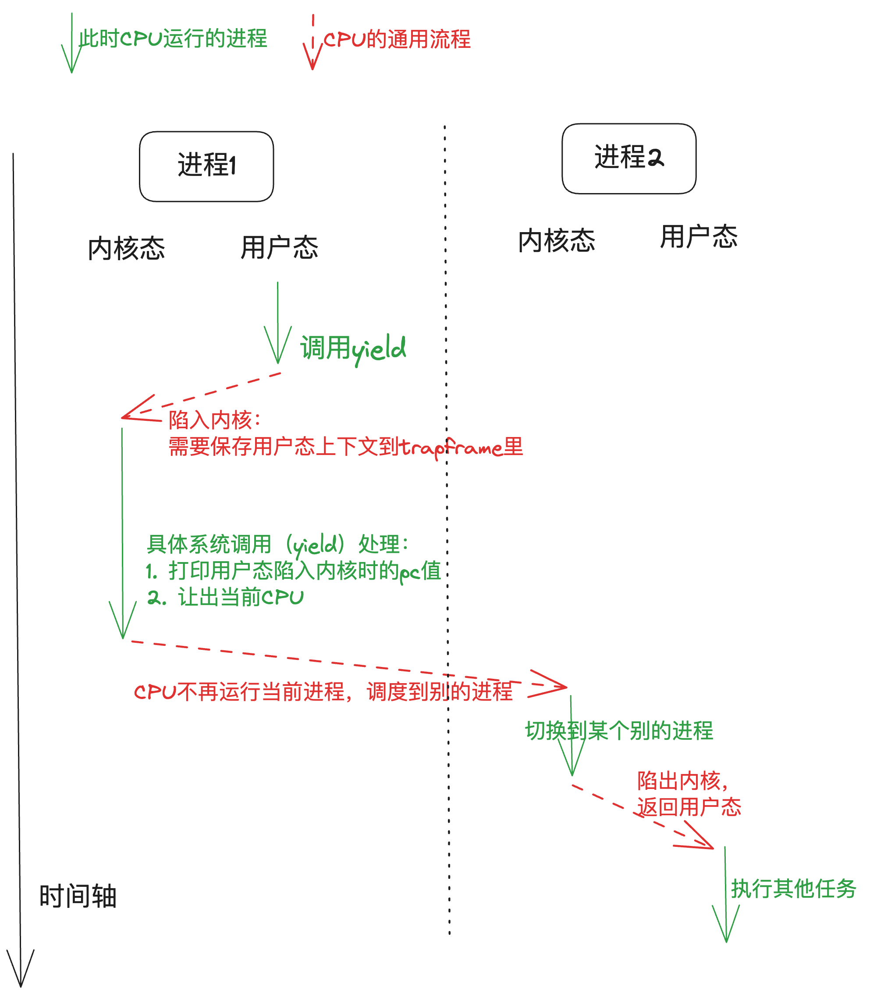
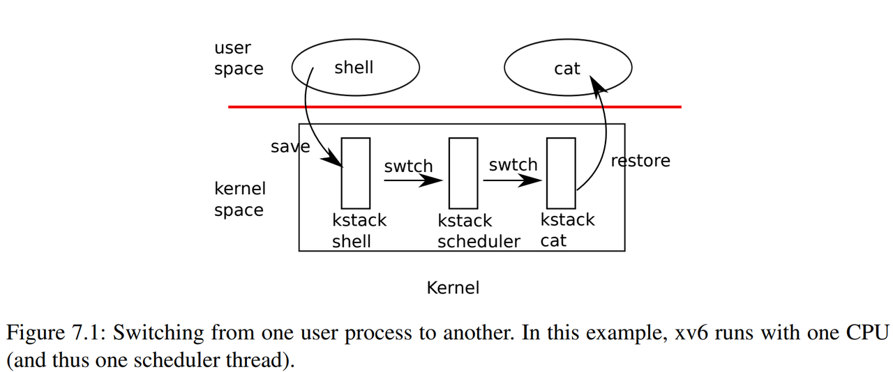
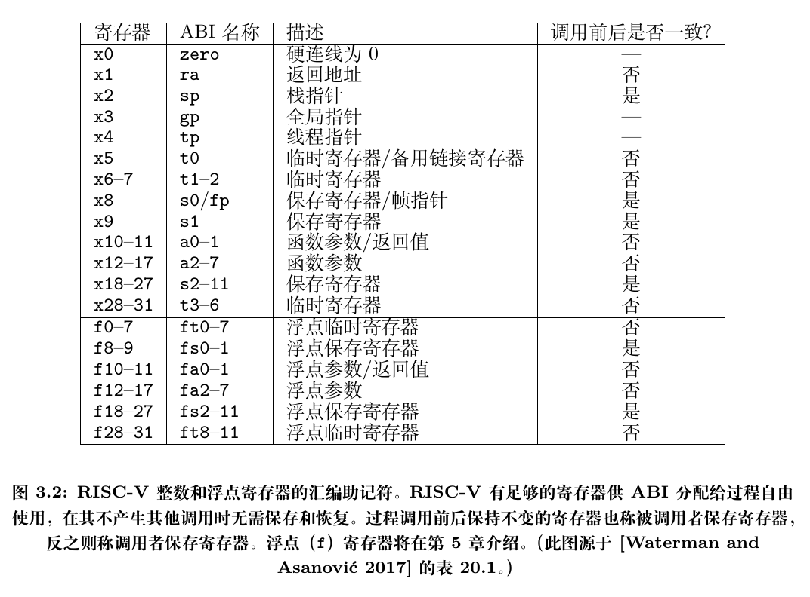

实验原理¶
这页怎么读
这页不追求把每一行源码都讲完，而是帮你先把 Lab2 最需要的内容串起来。建议你先看清“用户态如何进入内核”“exit / wait / yield 各自改什么”“调度时到底切了什么”这三件事，再回头读源码细节。
1. 系统调用¶
系统调用就是调用操作系统提供的一系列内核函数。由于用户程序运行在 CPU 的用户态（又称非特权模式，用户模式），无法直接访问系统硬件和操作系统中的系统数据，用户程序只能发出请求，然后由内核调用相应的内核函数来帮助处理，最后将结果返回给应用程序。
1.1 系统调用的使用：用户的权力¶
在第一个实验中，我们将系统调用和 C 语言的函数放在一起做了一定的说明。
“系统调用被 封装 为函数以向用户提供接口，用户程序可以通过函数调用的方式请求操作系统的服务”。从这里我们需要注意，虽然两者看起来一样，但是这是因为封装的结果。接下来我们简要介绍 xv6 是怎样封装的。
首先看user/user.h文件，我们可以看到对应有许多的函数接口，其中标识了系统调用和用户库（ulib）。但是我们只看到了封装的接口，那么实际上系统调用的实现是什么样的呢？
1.2 系统调用的接口：操作系统内核和用户程序的中间体¶
现在我们看到 user/usys.pl 文件，该脚本文件会在编译期间被执行，生成一个汇编文件 usys.S。它会为每一个系统调用抽象接口生成一个具体的实现，叫做 entry。
1 2 3 4 5 6 7 8 9 10 11 12 13 14 15 16 17 18 19 20 | |
这段脚本中的 print 内容实际就是 RISC-V 指令集的汇编语言。$name 就是系统调用的名字，如 fork、exit 等；当脚本执行时，18 行之后 entry 内的字符串会被填入 $name。
系统调用步骤包括以下几步：
li a7, SYS_${name}\n：将系统调用号SYS_${name}（来自kernel/syscall.h）传给RISC-V CPU上的a7寄存器，这样内核就可以通过a7寄存器知道现在要处理的是什么系统调用。ecall：特殊指令，用来转入操作系统内核（ 关键 指令）。ret：操作系统内核执行完后会返回到这里，执行ret就结束了用户看到的系统调用，返回至用户程序。 你可以在编译后阅读user/usys.S，将其与上述脚本对应以便更好地理解。
拓展
在 RISC-V 指令集架构中，处理器通常分为 M (Machine)、S (Supervisor)、U (User) 三种工作模式。一般情况下，用户程序运行在 U 模式，而操作系统内核运行在 S 模式。上文中的 ecall（Environment Call）命令就是不同特权级之间的桥梁，例如用户程序执行 ecall 后，CPU 会从 U 模式切换至 S 模式，同时将 PC 的值置为一个由内核预设的地址，进而切换至内核的执行流。ecall 实际上是陷入（trap）的一种，想要了解更多细节可以自行阅读 RISC-V手册。
1.3 系统调用的参数：寄存器传参¶
这里我们还忽略了一点，那就是系统调用还需要传递参数。实际上，从汇编的角度来看，当我们调用一个函数的时候，传入的参数一般会按照位置依次放在 a0、a1、a2 等寄存器中。想要了解更多关于函数参数的细节可以自行阅读 RISC-V手册。

也就是说，调用 user/user.h 中的函数接口后，参数已经存储于寄存器了，这个时候我们就原封不动地继续调用 ecall，操作系统就可以通过 a0、a1、a2 等寄存器来获取参数了。此外，函数的返回值一般存储于 a0 寄存器。
提示
根据 RISC-V 标准规定，函数调用通过寄存器传递参数。在 xv6 内核中可以通过 argint（argument integer）、argaddr（argument address）等函数获取系统调用的参数，分别对应整数和指针，它们都调用 argraw（argument raw）来读取已保存的寄存器。比如，kernel/syscall.c 中 argraw 函数所描述的就是取出参数的过程。
static uint64 argraw(int n) {
struct proc *p = myproc();
switch (n) {
case 0:
return p->trapframe->a0;
case 1:
return p->trapframe->a1;
// ……
其中 trapframe 就是用户进程的寄存器状态（上下文，详见 3.1 trapframe）。
1.4 系统调用的分发和实现：解耦合¶
按照之前所述，定义一个系统调用实际上很简单：将系统调用号的宏定义 SYS_${name} 添加在 kernel/syscall.h，每次系统调用时根据 a7 寄存器传入的值判定具体的系统调用类型即可。
那么接下来我们面临的第一个问题是：内核怎么通过系统调用号（存在 a7）来执行不同的系统调用函数。
提示
我们需要关注 kernel/syscall.c 中定义的一大段看起来就和系统调用有关的部分。这里可以分为两个部分，一个是用 extern 进行标识的函数接口，另一个是以 syscall 为名的数组。
extern uint64 sys_chdir(void);
extern uint64 sys_close(void);
extern uint64 sys_dup(void);
extern uint64 sys_exec(void);
extern uint64 sys_exit(void);
// ……
static uint64 (*syscalls[])(void) = {
[SYS_fork] sys_fork, [SYS_exit] sys_exit, [SYS_wait] sys_wait, [SYS_pipe] sys_pipe,
[SYS_read] sys_read, [SYS_kill] sys_kill, [SYS_exec] sys_exec, [SYS_fstat] sys_fstat,
[SYS_chdir] sys_chdir, [SYS_dup] sys_dup, [SYS_getpid] sys_getpid, [SYS_sbrk] sys_sbrk,
[SYS_sleep] sys_sleep, [SYS_uptime] sys_uptime, [SYS_open] sys_open, [SYS_write] sys_write,
[SYS_mknod] sys_mknod, [SYS_unlink] sys_unlink, [SYS_link] sys_link, [SYS_mkdir] sys_mkdir,
[SYS_close] sys_close, [SYS_rename] sys_rename,
};
- 前者实际上声明了这些函数，这些函数的实现不必在这个文件中，而是分布在各个相关的代码文件中（一般放在以
sys开头的文件中，包括sysproc.c与sysfile.c）；我们在这些代码文件中实现好对应的函数，最后就可以编译出对应名字的汇编代码函数，extern就会找到对应的函数实现了。 - 后者则是将这些函数的指针都放在统一的数组里，并且数组下标就是系统调用号，这样我们在分辨不同系统调用的时候就可以很方便地用数组来进行操作了。
kernel/syscall.c中的syscall()函数就根据这一方法实现了系统调用的分发（通过不同系统调用号调用不同系统调用函数），请仔细阅读并尝试理解。 - 将两者合起来使用，可以使得系统调用的 实现 和系统调用的 分发 彼此 分离，这对函数编写者非常友好，但是会让初学者有些迷惑，这是需要注意的。
2. 举例：系统调用的实现¶
现在我们以一个具体的例子，来看看 xv6 是怎么实现系统调用的。我们准备挑选看起来朴实无华的系统调用 sleep，因为它实际上暗藏凶险。
先来看张总图把握一下整体流程：

以下只对系统调用过程某几个关键点进行分析，其他相关代码/流程需要大家自行查阅代码：
2.1 用户程序调用¶
xv6 关于 sleep 系统调用接口的声明在 user/user.h。
/* user/user.h */
int sleep(int);
2.2 usys.S 汇编¶
然而，user/user.h 只是对函数原型进行了声明。具体做了什么事呢？这个定义是在 usys.S 中，详见 1.2 小节。
需要注意的是，usys.S 汇编是由 usys.pl（perl 脚本）自动生成的。也就是，当你要增加新的系统调用时，不要修改 usys.S，而是参考其他系统调用接口来修改 usys.pl。
2.3 uservec 汇编¶
当执行 ecall 指令后，内核会切换到 supervisor mode。接着，内核执行的第一个指令是来自 trampoline.S 文件的 uservec 汇编函数。
这里可以先把 uservec 理解成“接住这次从用户态进入内核的陷入”的第一段代码。它本身不是系统调用的主体逻辑，而是先把后续运行 C 代码所需的环境准备好。
对本实验来说，你先知道它主要做了下面几件事就够了：
- 保存用户态寄存器；
- 把这些寄存器内容写到当前进程对应的
trapframe中； - 切换到内核接下来要使用的运行环境，例如内核栈；
- 最后再跳转到后面的
usertrap()，交给C代码继续处理。
2.4 usertrap¶
之后，代码跳转到了由 C 语言实现的 usertrap 函数中（trap.c），判断如果是来自用户的系统调用则执行 syscall 函数。
提示
一般进入 usertrap 函数有三种情况：
1. syscall 系统调用，是由用户进程主动调用 ecall 指令来实现的。
2. device interrupt 设备中断，比如：磁盘设备完成了读写请求操作。
3. exception 异常，是用户进程或内核程序的 illegal instruction 导致的，比如：除 0 错误，或引用无效的虚拟地址。
void usertrap(void) {
if (r_scause() == 8) {
// system call
// ……
} else if ((which_dev = devintr()) != 0) {
// ok
} else {
printf("usertrap(): unexpected scause %p pid=%d\n", r_scause(), p->pid);
printf(" sepc=%p stval=%p\n", r_sepc(), r_stval());
p->killed = 1;
}
// ……
2.5 syscall¶
syscall 函数里有一个表单，根据传入的代表系统调用的数字进行查找，并执行具体实现系统调用功能的函数。对于这个例子来说，这个函数就是 sys_sleep。
2.6 sys_sleep¶
其代码可见 kernel/sysproc.c line 55-74：
55 56 57 58 59 60 61 62 63 64 65 66 67 68 69 70 71 72 73 74 | |
-
参数：系统调用
sleep有一个参数，用来告知操作系统sleep的持续时间。但是这里怎么是void？- 这是因为
xv6又进行了一次解耦合，通过一个额外的函数获取参数，它们以arg开头，具体见kernel/syscall.c。
- 这是因为
-
获得进程的状态：执行系统调用的时候，参数不会告诉
xv6自己到底是什么程序。因此，xv6需要额外的调用来弄清楚，现在到底是什么程序正在运行？- 关键的函数是
myproc()，这个函数将返回指向当前进程的PCB（也就是进程控制块，详见 3. 进程控制块）的指针（struct proc *），里面有程序的各种信息。
- 关键的函数是
-
sleep的实现逻辑：这里，主要就是根据各个不同的系统调用，实现自身应的逻辑即可。现在简要介绍sleep逻辑。line 61：获取参数line 63：给时钟加锁，获取当前的时间line 65：比较是否到了sleep结束的时间line 66-69：进程结束了就退出，什么也不做line 70：否则继续睡眠line 72-73：到时间了则释放时间的锁，返回程序，sleep结束。
2.7 执行完后返回用户空间¶
当 sleep 完成之后，返回至 syscall 函数。在 syscall 函数中调用 usertrapret，用于完成部分方便在 C 代码实现的返回用户空间的工作。还有一些工作只能在汇编语言完成，即 trampoline.S 中的 userret 函数。最后，这个函数执行 sret 指令，切回用户空间，执行用户空间 ecall 的下一条指令 ret。当 ret 执行完后，返回调用函数的位置，执行用户程序的下一条语句。
以上，即是系统调用过程中大致的代码执行流程。
3. 进程控制块与两份“现场”¶
3.1 trapframe：保存用户态现场¶
前面在 2.3 uservec汇编 里已经提到：uservec 会先把用户态寄存器保存起来，再切换到内核运行环境。保存下来的这份用户态现场，就放在 trapframe 中。也就是说，2.3 里那一步“保存寄存器”，对应到这里就是把内容写入 trapframe。
可以先看一个只保留关键字段的简化版本：
struct trapframe {
uint64 kernel_satp;
uint64 kernel_sp;
uint64 kernel_trap;
uint64 epc;
uint64 kernel_hartid;
uint64 ra;
uint64 sp;
...
uint64 a0;
...
uint64 a7;
};
对 Lab2 来说，最重要的是：
- 用户态寄存器值在这里；
- 用户态的程序计数器
pc也在这里，对应上面的epc； - 任务三里要求你打印的“当前进程用户态
pc”，本质上就是看trapframe中保存的值； a0到a7这类寄存器也在这里，所以系统调用参数和返回值最后都能从这里对应起来。
3.2 context：保存内核线程现场¶
除了 trapframe，每个进程还有一个 context。它保存的不是用户态现场，而是 内核线程在上下文切换时需要保存的寄存器 。
可以先看一个关键字段版本：
struct context {
uint64 ra;
uint64 sp;
uint64 s0;
...
uint64 s11;
};
可以这样区分：
trapframe：用户态进内核时保存；context：内核线程切到别的线程时保存。
很多同学会问：context 是在什么时候用到的？
它主要出现在内核里的上下文切换过程中。比如当前进程因为 yield() 主动让出 CPU，或者在调度过程中需要切走时，内核会调用 swtch()：
- 先把当前执行流的寄存器保存到自己的
context； - 再从另一个执行流的
context中恢复寄存器； - 这样 CPU 就从“当前内核线程”切到了“另一个内核线程”。
因此，context 保存的不是用户程序那一侧的现场，而是 进程在内核里运行到一半时的现场 。等这个进程以后再次被调度回来，内核就会从这份 context 继续往下执行。后面在 6.2 swtch() 里还会再看到这件事。
这正是任务三里“打印上下文保存地址范围”时要找的对象。
如果 p 是当前进程，那么：
&p->context是这段结构的起始地址；&p->context + 1是这段结构末尾的下一个位置；- 这就是为什么文档里专门提醒你理解 C 语言的指针加法。
3.3 进程控制块放在哪里，状态怎么看¶
xv6 用 struct proc proc[NPROC] 这张全局进程表保存所有进程控制块（PCB）。
可以先看一个只保留本实验最相关字段的版本：
enum procstate {
UNUSED, // 这个槽位还没有被进程占用
SLEEPING, // 进程在睡眠，等待某个事件发生
RUNNABLE, // 进程已经可以运行，正在等 CPU
RUNNING, // 进程当前正在某个 CPU 上运行
ZOMBIE // 进程已经退出，等待父进程 wait 回收
};
struct proc {
struct spinlock lock; // 保护当前进程控制块中的关键字段
enum procstate state; // 当前进程所处的状态
int pid; // 进程号
struct proc *parent; // 指向父进程
struct trapframe *trapframe; // 保存用户态寄存器现场
struct context context; // 保存内核线程切换时的现场
char name[16]; // 进程名
...
};
struct proc proc[NPROC]; // 全局进程表，保存所有进程控制块
拓展：什么时候创建 PCB？什么时候会用到 PCB？
- xv6 不是在需要时临时“new 一个 PCB”，而是一开始就有全局进程表
proc[NPROC]。 - 当内核需要创建新进程时，会在表里找一个
UNUSED槽位，并在allocproc()中初始化pid、trapframe、context等内容。 userinit()会为第一个用户进程分配并初始化一个空闲proc表项；后面的fork()也会沿着这条路径，再找一个UNUSED槽位来初始化新进程。- 只要内核要管理某个进程，基本都会用到 PCB；系统调用常通过
myproc()找到当前进程的 PCB。 - 做调度时，要看
state和context；做exit / wait时，要看pid、parent、state；返回用户态时，还会用到trapframe。
所以，对 Lab2 来说，可以把 PCB 理解成： 内核用来记录和管理一个进程的“总信息表” 。
4. exit 任务需要理解什么¶

exit 的功能，是结束当前进程。它不是“立刻把这个进程从系统里彻底删掉”，而是先由内核完成收尾工作，再把进程标记为 ZOMBIE，等待父进程通过 wait() 回收。
可以把 proc.c 中的 exit(int) 按下面的顺序理解：
- 先做退出前的资源清理，例如关闭当前进程打开的文件；
- 再处理亲子关系，把当前进程的子进程重新交给
init； - 如果父进程可能正在
wait()，就把它唤醒； - 然后把当前进程状态改成
ZOMBIE，表示“进程已经结束，但还要等父进程回收”； - 最后进入调度，不再作为普通进程继续执行，也不会再返回用户态。
这就是为什么任务一要求你在“合适位置”打印信息：
- 如果打印太晚，子进程的父进程可能已经被改成
init； - 如果打印太早，你又可能还拿不到想要的状态；
- 这题真正考察的，就是你是否看懂了
exit的执行流程，而不是单纯会写输出语句。
5. wait 为什么会阻塞，也为什么能做成非阻塞¶

原版 wait 的语义是：父进程等待某个子进程退出；如果暂时还没有可回收的僵尸子进程，那就睡眠等待。
你在源码里会看到类似逻辑：
- 先遍历子进程，查找是否存在
ZOMBIE； - 如果有，就回收并返回；
- 如果暂时没有，但将来还有可能等到，就调用
sleep()把自己挂起。
这就是“阻塞等待”。
而本实验要求你增加一个 flags 参数，让 wait 同时支持：
flags == 0：保持原来的阻塞语义；flags == 1：不要睡眠，暂时没有结果就直接返回-1。
拓展：非阻塞 wait 在实际操作系统里有什么用？
非阻塞 wait 的意义是：父进程不用一直睡眠等待，可以先检查一次；如果子进程还没退出，就先继续做别的事。
例如：
- Shell 可以检查后台任务是否结束；
- 服务器可以一边处理请求，一边查看子进程状态；
- 图形界面或事件循环程序不能长时间阻塞，否则界面会卡住。
它的重点不是“更快”，而是让父进程在等待子进程时更主动、更灵活。
所以，任务二的关键不是“重写一个新系统调用”，而是在原有 wait 逻辑里增加一条分支：
本来要
sleep()的地方，如果是非阻塞模式，就直接返回。
这里要特别注意锁：如果你在持锁状态下提前返回，记得先释放对应的锁。
6. yield 为什么会触发调度¶
6.1 yield 的含义¶
前面几节主要在讲：一次系统调用是怎样从用户态进入内核、再由 syscall() 分发到具体处理函数的。对第三题来说，还要再往后看一步： 当用户程序调用 yield() 之后，为什么会进一步触发调度？
这里先分清两层：
- 用户态的
yield()：这是你在本实验里要补齐的系统调用接口； - 内核态的
yield()：这是 xv6 在kernel/proc.c中已经提供好的调度函数。
用户程序里写的 yield() 进入内核后，会先经过系统调用入口 sys_yield()；而真正让当前进程让出 CPU 的，通常是后面这个已经存在的内核态 yield()。
它的含义不是“进程结束”，而是“当前进程主动让出 CPU”。也就是说，当前进程还活着，只是暂时不继续运行；调度器会去找别的可运行进程，之后这个进程还可能再次被调度回来。

换句话说，内核态 yield() 不是“自己去挑下一个进程”，而是先把当前进程交还给调度器。下面先看它的核心代码：
void
yield(void)
{
struct proc *p = myproc(); // 取到当前正在运行的进程
acquire(&p->lock); // 先拿锁，保护进程状态修改
p->state = RUNNABLE; // 当前进程主动让出 CPU，但之后还可以继续运行
sched(); // 进入调度流程，切回调度器线程
release(&p->lock); // 这个进程再次被调度回来后，才会继续执行到这里
}
这几行可以这样理解：
myproc()：拿到当前正在运行的进程；acquire(&p->lock)：先拿进程锁，保护后面的状态修改；p->state = RUNNABLE：告诉调度器“我现在愿意让出 CPU 了，之后还可以再运行”；sched()：真正进入调度相关流程；release(&p->lock)：等这个进程以后再次被调度回来时，这一行才会继续执行。
最容易误解的一点是：yield() 调用 sched() 之后，这个进程并不是“消失了”，而是 先切走，等以后再回来 。
6.2 从 yield() 到 swtch()：到底切了什么¶
单看 yield() 还不够，因为真正执行上下文切换的，是后面的 sched() 和 swtch()。
可以先把 sched() 里最关键的动作理解成下面这样：
void
sched(void)
{
struct proc *p = myproc();
struct cpu *c = mycpu();
swtch(&p->context, &c->context);
}
这里最关键的是 swtch(&p->context, &c->context) 这两个参数：
&p->context：把当前进程这条内核执行流的寄存器，保存到这里；&c->context：从这里恢复调度器线程之前保存下来的寄存器。
所以，这一步发生的事情是：
- 当前进程在内核里的执行现场，先保存到
p->context； - 调度器线程之前保存的现场，再从
c->context中恢复出来； - CPU 不再继续执行当前进程这条内核路径，而是回到调度器线程继续运行。
这就是“上下文切换”的本质： 切换的不是整个进程对象，而是两份寄存器现场。
什么时候会发生上下文切换，也就是走到 swtch()？
可以先把它分成两类： 主动切换 和 非自愿切换 。
主动切换 是指：当前进程自己在内核里走到了“我现在不能或不想继续运行”的位置，于是主动把 CPU 交回调度器。常见情况有：
yield()：当前进程主动让出 CPU；sleep()：当前进程要等待某个事件，先睡眠；exit()：当前进程结束，不再继续执行。
这几种情况通常都会先进入 sched()，然后调用 swtch(&p->context, &c->context)：
- 先把当前进程这条内核执行流的寄存器保存到
p->context； - 再把调度器线程之前保存的寄存器从
c->context中恢复出来； - 这样 CPU 就从“当前进程的内核执行流”切回到了“调度器线程”。
非自愿切换 是指：当前进程自己并没有主动说“我要让出 CPU”，但内核因为调度需要，还是把它切走。最典型的情况就是 定时器中断 ：
- 时间片到了，时钟中断到来；
- 内核进入中断处理流程；
- 如果当前情况允许调度，就会触发
yield()，再进一步走到sched()和swtch()； - 这对应的就是常说的时间片轮转或定期强制切换。
而当 scheduler() 选中某个 RUNNABLE 进程时，会调用 swtch(&c->context, &p->context)：
- 先把调度器线程当前的寄存器保存到
c->context； - 再把目标进程之前保存的寄存器从
p->context中恢复出来； - 这样 CPU 就从“调度器线程”切到了“目标进程的内核执行流”。

看这张图时，可以按一次“切走再切回”的过程来理解：
- 当前进程先在自己的执行流里运行；
- 如果它主动调用
yield()，或者因为sleep()、exit()、定时器中断等原因需要让出 CPU，就会进入调度相关流程； - 这时通过
swtch(&p->context, &c->context)，先保存当前进程的内核上下文，再恢复调度器的上下文； - 调度器开始运行，去寻找下一个状态为
RUNNABLE的进程； - 选中目标进程后，再通过
swtch(&c->context, &p->context)，保存调度器上下文、恢复目标进程上下文； - 这样 CPU 就切到了新的进程，它再继续自己的内核执行流，之后再返回用户态运行。
所以，这张图真正想表达的是：CPU 并不是一直只属于某一个进程，而是在“当前进程的内核执行流”和“调度器线程”之间不断切换，再由调度器决定接下来让哪个进程继续运行。
如果你再往下一步看，可以直接看看 kernel/swtch.S 里的 swtch()。它的核心动作大致就是：
swtch:
sd ra, 0(a0)
sd sp, 8(a0)
sd s0, 16(a0)
...
sd s11, 104(a0)
ld ra, 0(a1)
ld sp, 8(a1)
ld s0, 16(a1)
...
ld s11, 104(a1)
ret
这里可以这样理解：
a0指向“旧上下文”，也就是swtch(old, new)的第 1 个参数，对应当前要被保存的那份context；a1指向“新上下文”，也就是swtch(old, new)的第 2 个参数，对应接下来要恢复的那份context；- 前半段
sd是把当前寄存器保存到旧上下文； - 后半段
ld是从新上下文中恢复寄存器； - 最后的
ret会跳到新上下文里的ra所指位置，于是 CPU 就在另一条执行流中继续运行。

为什么 swtch() 要保存 callee-saved，还要保存 ra 和 sp？
- 在 RISC-V 调用约定里，
s0到s11这类寄存器属于callee-saved； - 所谓
callee-saved，意思是“被调用者如果用了这些寄存器，就要负责把它们恢复好”； - 编译器在生成代码时，会默认这些寄存器在一次函数调用前后应该保持不变；
- 而像
a0到a7、t0到t6这类caller-saved寄存器，本来就允许在函数调用中被改写，所以swtch()不需要专门把它们保存进context。
另外，ra 和 sp 虽然不在 s0 到 s11 里，但也必须保存：
ra（return address）决定了“切走后将来切回来要从哪里继续执行”。swtch()的最后是ret，它会跳转到“被恢复的那份上下文”里的ra所指位置；如果不保存/恢复ra，两条执行流就无法各自回到正确的返回点。sp（stack pointer）决定了当前执行流正在使用哪一个栈。上下文切换本质上要切换到另一条执行流的内核栈；如果不保存/恢复sp，局部变量、保存的寄存器、返回地址等都会落到错误的栈上，现场就会直接乱掉。
而 swtch() 从效果上看，就像是一次非常特殊的函数调用：
- 某个内核函数先调用了
swtch()； - 之后 CPU 切到了别的执行流；
- 等将来再切回来时，原来的函数会像“
swtch()刚返回一样”继续往下执行。
要让这件事成立，就必须把这些按调用约定本该保持不变的寄存器保存好、恢复好。否则，原来那条内核执行流恢复后，局部变量、栈帧、返回位置等信息就可能对不上。
6.3 scheduler() 怎样找下一个 RUNNABLE 进程¶
sched() 里那句 swtch(&p->context, &c->context) 会把 CPU 切回调度器线程，而且 会回到 scheduler() 里那次 swtch(&c->context, &p->context) 的下一行 。对应下面代码第 13 行；切回后从第 14 行继续执行。调度器线程本身就在一个无限循环里，它的入口函数就是 scheduler()，所以一旦切回去，CPU 就继续在 scheduler() 里往下执行。
可以先看一个简化版：
1 2 3 4 5 6 7 8 9 10 11 12 13 14 15 16 17 18 19 | |
这段代码可以按顺序这样读：
- 调度器不断扫描全局进程表
proc[]； - 只有状态是
RUNNABLE的进程，才有资格被调度； - 选中之后，先把它改成
RUNNING； - 再执行
swtch(&c->context, &p->context)，把调度器线程切到这个进程的内核线程； - 以后如果这个进程再次
yield()、sleep()或exit()，CPU 又会切回调度器线程，从这条swtch()后面继续往下执行。
这里最值得体会的一点是：
- 调度器本身也是内核里的一条执行流；
- 普通进程在内核里运行时，也是一条执行流；
- 它们就是靠
swtch()在两份context之间来回切换。
所以，任务三里要求你打印 “Next runnable process pid is ...” ，本质上就是让你站在 scheduler() 的视角，去看“下一个可能被选中的 RUNNABLE 进程是谁”。
6.4 mycpu() 和 myproc()¶
为了把上面的切换过程真正串起来，还需要认识两个很常用的函数：
mycpu()：返回当前 CPU 对应的struct cpu *；myproc()：返回当前 CPU 正在运行的struct proc *。
这两个函数来自 kernel/proc.c，核心目的是：让内核在任何位置都能拿到“当前 CPU”以及“当前进程”。这件事在多核情况下尤其重要，因为每个 CPU 上可能运行着不同的进程。
可以先把 struct cpu 里和本实验最相关的部分理解成下面这样：
struct cpu {
struct proc *proc;
struct context context;
...
};
这里：
proc表示当前这个 CPU 正在跑哪个进程；context保存的是调度器线程自己的上下文。
mycpu() 为什么能识别当前 CPU？
mycpu() 的内部会通过一个 CPU 私有寄存器（RISC-V 的 tp）来识别“我是哪一个 CPU”，然后返回对应的 struct cpu *。在 xv6 中，tp 保存的就是当前硬件线程（hart）的编号。所谓硬件线程，可以把它理解成“一个真正能独立取指、执行指令的执行单元”；在多核或多硬件线程的处理器上，每个 hart 都有自己的 tp 值。于是我们就可以用 tp 在 cpus[] 数组里找到自己对应的 struct cpu。因此，mycpu() 的返回值只在“当前 CPU 的执行流”里仍然有效，也就是不会中途变成别的 CPU。
myproc() 则是先调用 mycpu()，再从 c->proc 中取出当前 CPU 正在运行的进程指针。为了避免在取值过程中被中断或切换打断，它通常会在内部暂时关闭中断（push_off() / pop_off()），确保取到的是一个稳定的一致状态。
所以：
yield()里常常先用myproc()找到当前进程；sched()和scheduler()里又常常通过mycpu()找到当前 CPU 以及c->context；- 这样才能把“当前进程的
p->context”和“调度器的c->context”对应起来。
任务三里：
- 要打印当前进程信息，通常先从
myproc()入手； - 要理解“为什么会切回调度器、又怎样切回进程”，则要把
mycpu()一起连起来看。
7. 把原理和任务对上号¶
- 做任务一时，重点看
exit、reparent、ZOMBIE。 - 做任务二时，重点看系统调用参数怎么取，以及
wait里“本来要睡眠”的位置。 - 做任务三时，重点看
trapframe、context、scheduler()、myproc()。
如果你在某一题卡住，可以先问自己两个问题：
- 这题改动发生在用户态，还是内核态？
- 这题真正要改的是“系统调用入口”，还是“内核主体逻辑”？
把这两个问题想清楚，很多实现路径就会自然明朗。
8. 参考资料¶
- xv6 book
- 用户态系统调用相关文件：
user/user.h、user/usys.pl - 内核态系统调用相关文件：
kernel/syscall.h、kernel/syscall.c、kernel/sysproc.c - 进程相关文件：
kernel/proc.h、kernel/proc.c